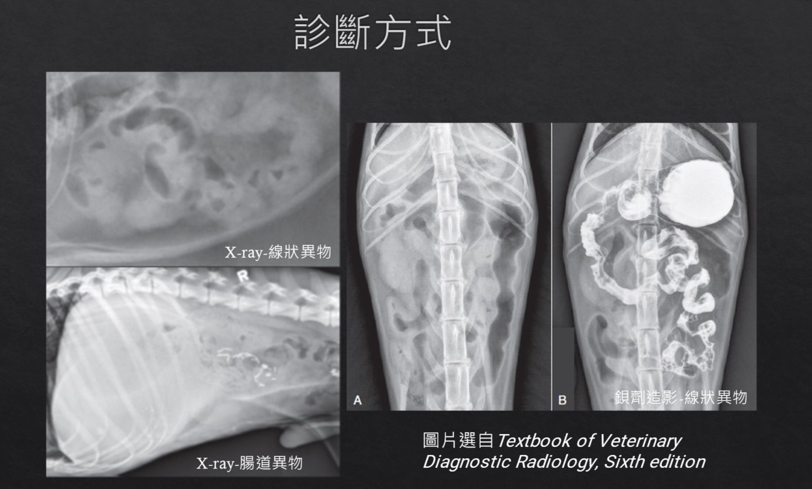

2022-01-25
別讓你的毛小孩吃錯東西 - 腸胃異物
腸胃異物在毛小孩是很常見造成急性嘔吐的原因，尤其在過年過節期間，家人們都比平常忙碌，毛小孩們由於仍具有玩耍和狩獵的傾向，可能在你不注意的情況下吞入過大或無法消化的物體。
[ 毛孩們出現腸胃道異物的狀況，可依消化道部位區分為以下幾種 ]
1.食道異物: 過大的骨頭、金屬物體（例如針和魚鉤）、過大的零食片、球、繩子
2.胃腸道異物: 塑料玩具、塑膠袋、玉米梗、果核、襪子、巧拼碎片及麻布繩等
3.線性異物: 最常好發於「貓」身上，於理學檢查中偶而可發現線圈纏在舌下， 線性異物通常是細繩、紗線、布或牙線。
[ 毛孩們可能出現的症狀 ]
1.急性嘔吐、厭食、過度流涎、腹痛。
2.食道中過大的異物阻塞可能影響到上呼吸道的暢通，導致急性呼吸窘迫。
[ 診斷方式 ]
1.理學檢查- 線狀異物偶爾可以在舌下發現
2.X-ray檢查- 可顯現出消化道內具阻射性的物體輪廓
3.超音波- 用於識別X-ray無法看到的異物，或是檢查腹腔內有無積液、評估腸道蠕動狀況
4.顯影劑造影- 輔助阻射性性較低的物體(泡棉、某些果核)輪廓顯現，或是用於檢查消化道因異物造成穿孔的位置
5.內視鏡- 由於長度限制，常用於診斷食道、胃和十二指腸近端異物，但建議先以X-ray和超音波檢查優先。

[ 治療方法 ]
1.催吐- 如果物體很小，邊緣是圓形的或者是布、不具有腐蝕性，且位於胃中，可以嘗試透過催吐來將其排出。 然而，必須考慮催吐是否會造成食道撕裂、異物卡在食道中的可能性以及異物或胃內容物是否可能被吸入呼吸道。
2.內視鏡- 可取出大多數的食道異物，或是將異物推入胃中，讓其自行溶解或搭配胃切開術取出異物。
3.開腹手術- 包括胃切開術、腸切開術及腸切除吻合手術，線狀異物需要多區域的腸切開術才能在不造成腸壁撕裂情況下取出。
異物長時間的停留可能造成消化道蠕動異常，甚至是壓力性壞死並導致穿孔，消化道穿孔可能造成縱隔氣腫、氣胸和胸腔積液或是腹膜炎。動物攝入異物為線狀異物、延遲就診或是發生上述併發症，與死亡率增加有關。
家中的毛孩雖然聰明，但還是無法區分何種食物可消化或不可消化，因此飼主需要將可知的危險物品收在毛孩們碰不到的位置，避免誤食。如果發現家中毛小孩嘔吐過於頻繁，嘔吐後明顯精神、食慾變差，或是有持續消瘦等狀況出現，建議還是需要前往動物醫院，請專業獸醫師為毛小孩們做一個詳細的診斷喔！
參考資料:
G. Hayes (2009). Gastrointestinal foreign bodies in dogs and cats: a retrospective study of 208 cases. , 50(11), 576–583. doi:10.1111/j.1748-5827.2009.00783.x P. Gianella; N. S. Pfammatter; I. A. Burgener (2009). Oesophageal and gastric endoscopic foreign body removal: complications and follow-up of 102 dogs. , 50(12), 649–654. doi:10.1111/j.1748-5827.2009.00845.x Theresa, F. (2012). Small Animal Surgery, 4th Edition. Elsevier Mosby, 1323-1343. Donald E. Thrall(2014). Textbook of Veterinary Diagnostic Radiology, Sixth edition. Elsevier Inc., 798, 801-802.